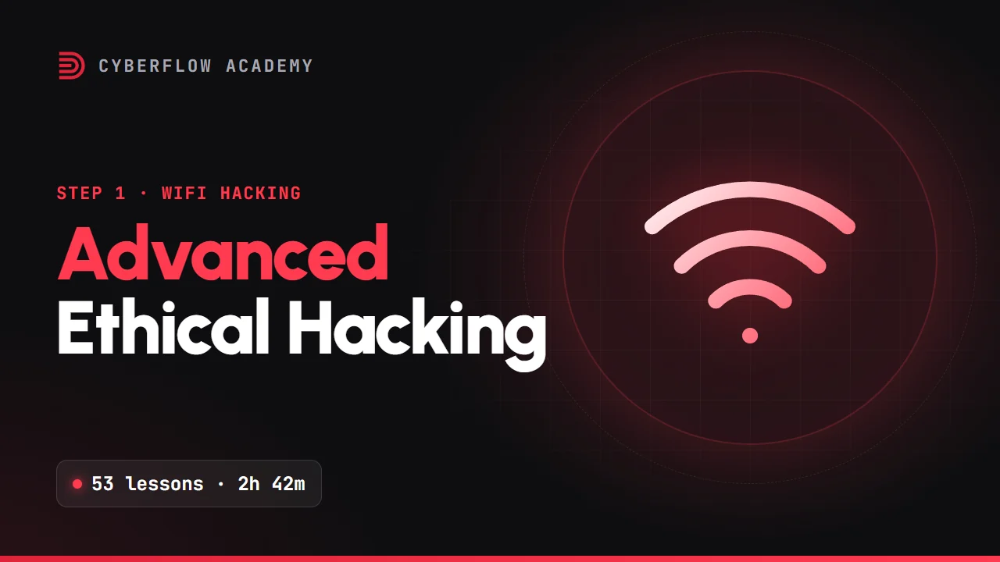
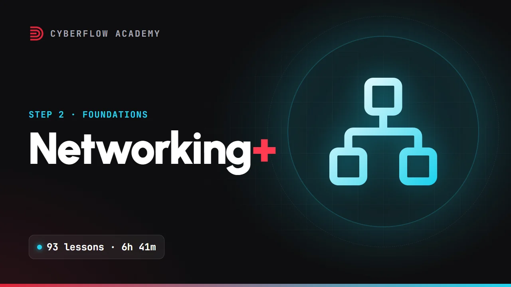

← all courses
Step 1 · Ethical hacking core
Advanced Ethical Hacking
WiFi hacking from start to finish: sniffing, WEP and WPA/WPA2 cracking, man in the middle, then server-side and client-side attacks. With quizzes along the way.

What's inside 10 chapters · 53 lessons
01Welcome Aboard!1 lesson · 12m
- Welcome + What You'll Need For This Course▶ 12m
02Pre-Connection Attacks6 lessons · 20m
- Packet Sniffing▶ 5m
- 2.4Ghz & 5Ghz Frequencies▶ 5m
- Targeted Packet Sniffing▶ 7m
- Deauthentication Attack▶ 3m
- Capturing Wi-Fi Packets with Airodump-NG📄 PDF
- Capturing Wi-Fi Packets with Airodump-NG✅ Quiz
03WEP Cracking6 lessons · 14m
- Cracking WEP Encryption▶ 4m
- WEP Cracking Basics▶ 4m
- Fake Authentication Attack▶ 4m
- ARP Request Replay Attack▶ 2m
- WEP Cracking📄 PDF
- WEP Cracking Quiz✅ Quiz
04Cracking WPA/WPA27 lessons · 21m
- Hacking WPA & WPA2 Without a Wordlist▶ 8m
- Capturing The Handshake▶ 5m
- Creating a Wordlist▶ 5m
- Cracking WPA & WPA2 Using a Wordlist Attack▶ 3m
- Cracking WPA & WPA2📄 PDF
- Essential Wordlists for Password Cracking📄 PDF
- Cracking WPA and WPA2 Encryption✅ Quiz
05Info Gathering4 lessons · 11m
- Gathering Sensitive Info About Connected Devices▶ 5m
- Gathering MORE Sensitive Info About Connected Devices▶ 6m
- Information Gathering📄 PDF
- Setting Up Your Virtual Target Machine for Cybersecurity Exploration✅ Quiz
06Man-in-the-Middle Attacks5 lessons · 6m
- Intercepting Network Traffic▶ 4m
- Spying on Networks (Capturing Passwords)▶ 2m
- Everything about Wireshark📄 PDF
- HoneyPots📄 PDF
- Understanding MITM Attacks & ARP Spoofing✅ Quiz
07Security of Networks6 lessons · 11m
- ARP Poisoning▶ 4m
- Detecting Suspicious Activities In The Network▶ 3m
- Preventing MITM Attacks▶ 4m
- Understanding ARP and ARP Poisoning📄 PDF
- Detection and Prevention of MiTM📄 PDF
- Understanding ARP and ARP Poisoning✅ Quiz
08Side Attacks6 lessons · 22m
- Hacking a Remote Server Using Metasploit Exploit▶ 6m
- Code Execution Vulnerability to Hack into a Remote Server▶ 8m
- Installing Nexpose▶ 2m
- Scanning a Target Server For Vulnerabilities with Nexpose▶ 6m
- Getting to Know Nexpose✅ Quiz
- Understanding Server-Side Attacks✅ Quiz
09Client Side Attacks7 lessons · 21m
- What Are Client-Side Attacks?▶ 1m
- Veil Framework▶ 3m
- Veil Payloads▶ 6m
- Making an Undetectable Backdoor▶ 7m
- Listening For Incoming Connections▶ 4m
- How to Stay Safe from Backdoors and Malicious Software📄 PDF
- Client-Side Attacks✅ Quiz
10Post Exploitation5 lessons · 10m
- What is Post Exploitation?▶ 1m
- Meterpreter▶ 3m
- File System Commands▶ 3m
- Maintaining Access▶ 3m
- Post Exploitation✅ Quiz
Lesson list taken straight from the academy on Nov 17, 2026. One membership gets you this course and all 14 others.
Right before and after this one in the path
 Full Ethical Hacking 3.0 NewBuild your own hacking lab, then go through recon, scanning, vulnerability analysis, exploitation, post-exploitation, man in the middle and staying anonymous.See all 61 lessons
Full Ethical Hacking 3.0 NewBuild your own hacking lab, then go through recon, scanning, vulnerability analysis, exploitation, post-exploitation, man in the middle and staying anonymous.See all 61 lessons 
Networking+ How networks really work: the OSI model, cables, IPv4 and IPv6, subnetting, protocols and ports, cloud, wireless, security and troubleshooting. Ends with two Network+ practice tests.See all 93 lessonsThis course, plus everything else.
One membership, all 14 courses, 484 lessons, the labs and the Discord. The discount is already on the buttons. Prices before Whop’s small fee and local tax.
Then $29 a month or $225 a year. Whop adds a 5% service fee. Cancel any time.
← back to the main page